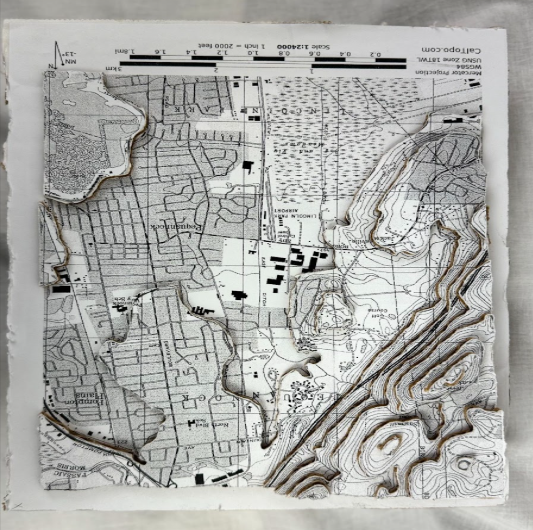
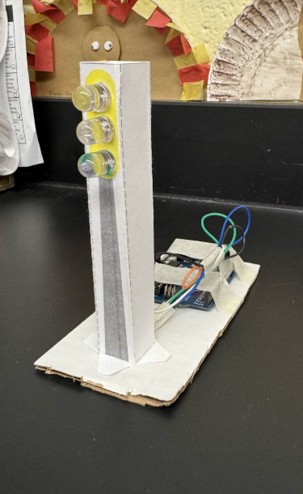
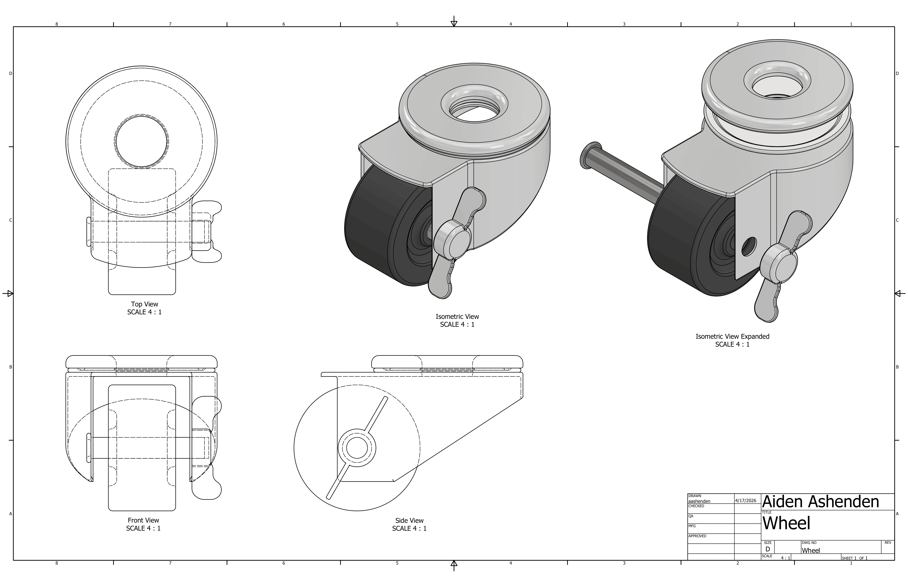
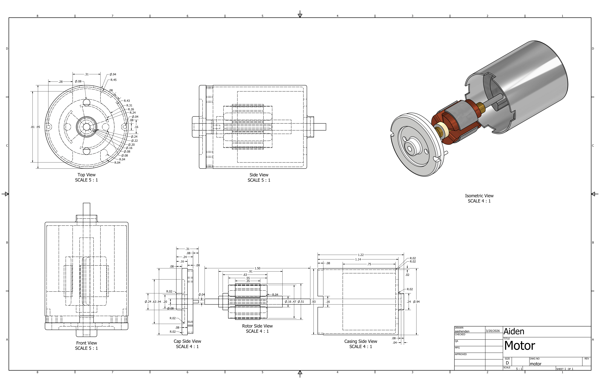

Topographic Map
We made the Topographic Map by first tracing which areas needed to be cut out, by elevation. After we had elevations 100-900 drawn, we used a Scroll Saw to cut out all of the pieces then glued them together. When we were done, each 100 foot step was represented by a layer of cardboard. Before doing this, there were some definitions we learned, such as Geography, the study of land, and Topography, the arrangement of land features displayed on a 3-dimensional design.
Freshman Year, 2023-2024

Clinometer
In this assignment, I was tasked with creating a homemade clinometer that must be reliable. I chose to create it out of PLA Plastic by 3D-printing my design. Once all of it had finished over the span of 18 hours, I needed to polish and sand to be accurate. I sanded down the side to allow it to slide smoother, but just enough to let it have enough friction where it still worked with my current idea, of holding the angle-indicating wire in place.
Freshman Year, 2023-2024

A-Truss Bridge
During this project, our task was to take measurements of a paper document and use it for a real-life model that we had to build using said measurements. First we accurately measured each dimension with scales and rulers. Then, we used those same measurements to make a cut sheet and material list. This cut sheet defined how much was to be used, and what we needed to cut out from a folder paper. After drawing out the pieces, we cut it out and now needed to fold. Finally, after folding each part of the bridge, glueing it was the last step to finalize the position of each bridge piece.
Freshman Year, 2023-2024

Warren Truss Bridge
Throughout this project, we were required to measure a paper document and use those measurements to build a real-life model. Using scales and rulers, we first took precise measurements of each dimension. Then, we created a cut sheet and material list using those identical measurements. This cut sheet instructed us on how much to use and what to cut out of a folder paper. We drew the pieces, cut them out, and then had to fold it. The last step in determining each bridge piece's final position was to glue it together after folding each component.
Freshman Year, 2023-2024

Compression Tower
This project uses all the skills we have learned up until this point to create a stable and optimal compression tower. We utilized balsa wooden sticks to create 12 columns (each ¼ thick) and 32 ties (each ⅛ thick) to make a tower that could have the best weight to strength ratio. We glued the beams and ties with Elmer’s glue, then sanded the top and bottom down to get it level and standing straight. Then stacking weights on it, we were able to see how much total weight it could hold, determining the strength to weight ratio.
Freshman Year, 2023-2024

Canned Panther
This project required us to create Series Circuit, that would be placed in a can to rattle uncontrollably. It required us to learn how to solder, take accurate measurements of a can, and use a hot wire cutter precisely to allow the XPS styrofoam to fit perfectly inside said can. First we created the circuit by soldering a motor, a 9V battery, a nickel, and a SPST switch together with wire. This would only activate if power was connected from the 9V battery, and if the SPST switch was correctly facing up, completing the circuit and turning the motor. The nickel, soldered to the motor, was added unevenly, so that when powered it would give more of a uncontrolled/chaotic movement, rather than it would be without the extra weight of a nickel.
Sophomore Year, 2024-2025

Arduino Traffic Light
For this assignment, we were to create a smaller version of the traffic lights seen across the world, containing 3 LEDs, an Arduino, and optionally, a resistor to dim the LEDs. I approached this by first using the “Blink” code from a previous Arduino project, and modifying it to function on pins 13-11, each respectively for a red yellow and green LED. Then I built a basic idea of the project on a breadboard, connecting the wires to the proper connections and making sure to do it in the most efficient way. One the circuit was figured out, it was removed from the breadboard and finalized by soldering it to wires, directly connecting to the Arduino. Minimal connections and resistors were used to maximise efficiency, with the only part I feel I could improve upon being the length of the wires, with the final product being slightly tangled.
Sophomore Year, 2024-2025

AutoCAD Wheel Design
Throughout my Junior year of highschool, our objective that year for the STEM Academy was to learn the basics of Autodesk Inventor. A majority of our projects were to recreate a schematic sheet that we were given, detailing the specifics of a 3D geometry. Gradually these assignments would get harder by including curves, bevels, different surfaces, and eventually threads. This wheel design was a later assignment in the year, where we had to choose an object around the classroom and recreate it in Inventor. Induvidual images with the dimensions were also created for each piece of the wheel, such as the bearing, brake, yoke, and axle.
Junior Year, 2025-2026

AutoCAD DC Motor Design
Similar to the previous project, this was also an assignment where a recreation of a real life object was the goal. Specifically, this one was a DC Motor. This one had to be significantly more detailed to display the different segments. Unlike the wheel, all of the segments were labeled and measured on one page for this object. I personally really enjoyed creating this one design compared to the other ones throughout the school year.
Junior Year, 2025-2026
STEM Capstone
Wan't to see what I'm working on now? Check out the STEM Capstone page to see what my final challenge is as a STEM Academy student.
Senior Year, 2026-Present